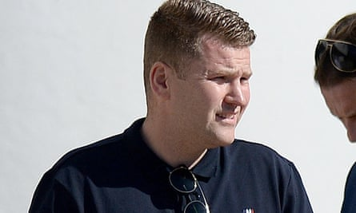

A Chelsea football fan was jailed for two years and eight months for committing an aggravated assault on the Guardian columnist Owen Jones with a “karate kick to his lower back”, motivated by hostility to the writer’s leftwing and LGBT politics.
James Healy, 40, from Portsmouth, was sentenced at Snaresbrook crown court for “a frenzied and wholly unprovoked attack” last August that took place in the street late at night after Jones had been out celebrating his birthday.
Recorder Anne Studd, the presiding judge, said there were “very significant aggravating factors” as she handed down the sentence to Healy at the high end of the range available.
The judge described Healy as “a man holding extreme rightwing opinions who attacked a victim who did no more than hold opinions on which the defendant did not agree”.
The judge described James Healy, pictured, as ‘a man holding extreme rightwing opinions’.Photograph: Central News
Two other men, Liam Tracey, 35, from Camden, London, and Charlie Ambrose, 31, from Brighton, were also sentenced for their part in the assault.
Tracey and Ambrose received an eight-month sentence, suspended for two years. Both had pleaded guilty last December although the conclusion of the case was delayed for several months due to the coronavirus crisis.
The court heard how Jones was attacked from behind by Healy at 2am outside the Lexington pub in King’s Cross, north London, having recognised the journalist and commentator in the pub earlier in the evening.
Jones was knocked to the ground and injured after being struck, and was “spared further blows only by the actions of the friends who were with him”, Studd said as she read out her judgment. A general fight then broke out involving Healy and the other two defendants.
In a victim impact statement, Jones said that while the injuries he sustained healed rapidly, there had been a longer lasting psychological impact. Despite previously being on the receiving end of online abuse, it was the first time he had been subject to a physical attack.
Philip McGhee, prosecuting, said Jones believed it was “harder to ignore online threats now” and that “he no longer feels he can walk alone, and will take taxis even for short distances as on account of this attack he feels at risk”.
The three men were not detained in the immediate aftermath of the fight in the street, but the court heard that they were arrested after they were recognised from CCTV footage by officers familiar with Chelsea supporters known to police.
Healy had at least nine convictions relating to football hooliganism stretching back to 1998. A search of his property after his arrest revealed a collection of far-right hooligan memorabilia, loosely connected with the Chelsea Youth Firm.
McGhee, prosecuting, said Healy possessed “a greeting card, which bore Nazi far-right extremist terror symbols, including those associated with the far-right Combat 18 group, one of whose tenets is ‘kill all queers’”.
Also discovered was a Nazi SS flag bearing a “totenkopf” death’s head skull symbol plus “a number of pins of badges”, including a circular pin badge with the “lead the way” and “whatever it takes” motto of Combat 18 and a badge that said “Chelsea FC no asylum seekers”.
Healy had pleaded guilty to the charges of actual body harm and affray but a special fact-finding hearing in January ruled that the “wholly unprovoked assault” was aggravated because Jones had been targeted because of his pro-LGBT and leftwing political views. Healy was also sentenced for 10 months for affray, served concurrently.
The judge concluded Jones had been identified in the pub by Healy or one of his friends earlier in the evening and that they had identified him as a target for attack.
CCTV footage showed Healy appearing to motion to friends outside the pub that Jones was leaving – and that he then followed him to launch “a running kick” on Jones in the small hours.
After the sentencing, Jones said: “Prison isn’t a solution to far right extremism: it’s a political problem which can’t be magicked away by custodial sentences. But if any good comes of this case, it’s to focus attention on a far-right threat which poses a violent threat to minorities and the left, including to those who have suffered far more than me”.
A Guardian spokesperson said: “We are pleased that the police and courts have now dealt with those responsible for this terrible attack. Assaults on journalists or political activists have no place in a decent society.”